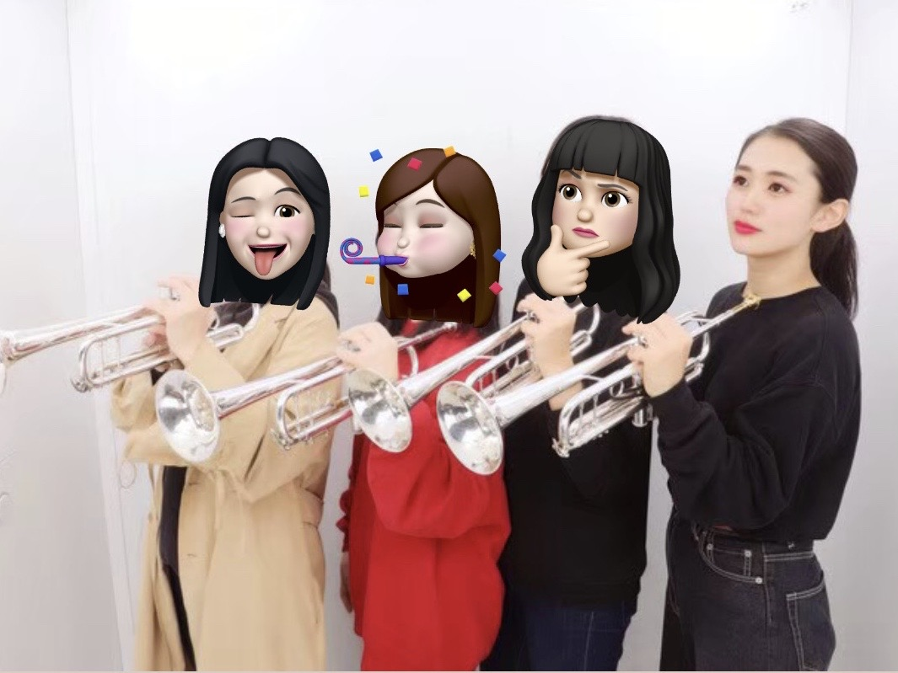

(同じ楽器の同期との写真です。）
所属など
- 学部：経済学部
- ゼミ：国際金融
- 部活：吹奏楽部（トランペット）
趣味や属性
趣味は映画・アニメ・ドラマ鑑賞（洋画が好きです）、ゲーム、食べること、寝ること、etc.
これまでの大学生活は、平日も休日も部活三昧だったので、たまにやってくるオフの日は何をしたらよいかわからなくなります。（だいたい寝てます）
好きなタピオカトップ３
- Gong Cha
- CoCo都可
- No Drink
Chatime
その他
使用PC
Windows
PC利用経験や、普段の使い方
主に、大学の授業で使っています。レポートを作成したり、パワーポイントを使ってプレゼンテーションしたり、プログラミングの授業で使ったりしています。
自分の強みや弱みなど
強み：決めたことを最後までやり遂げることができる、好きなことや興味があることへの情熱が人一倍ある
弱み：興味がないことや苦手なことに力を注げない、やるべきことを後回しにしてしまう時がある
TECH-BASE参加にあたり、意気込み
最後まであきらめずに頑張りますので、よろしくお願いします。
このページのトップへ／
ググる